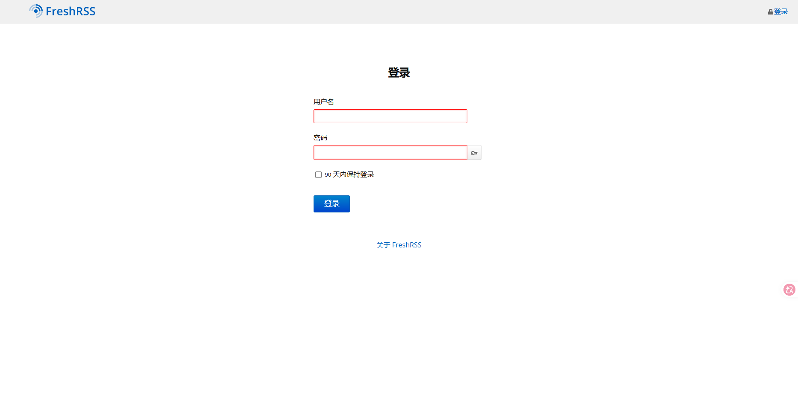
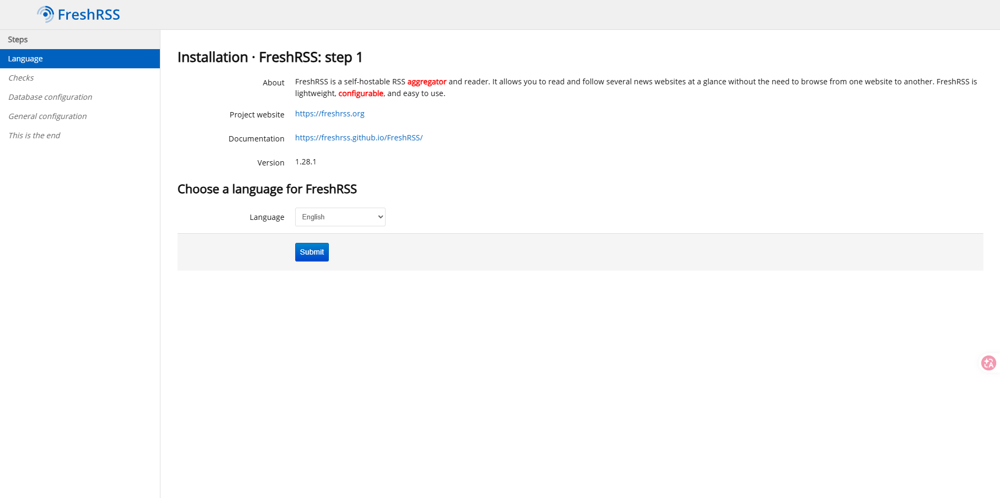
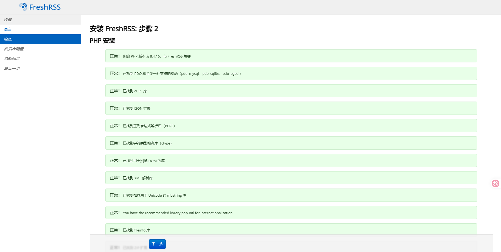
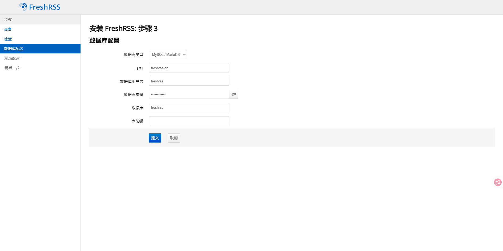
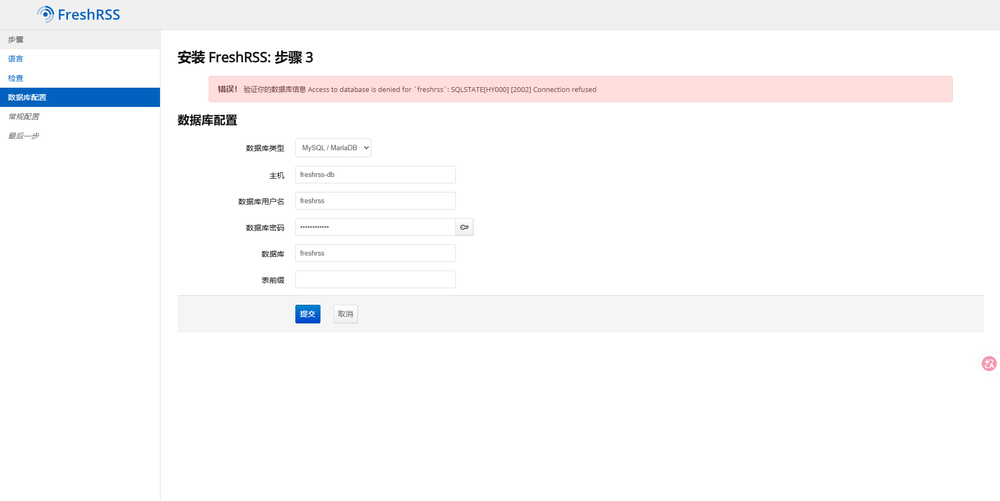
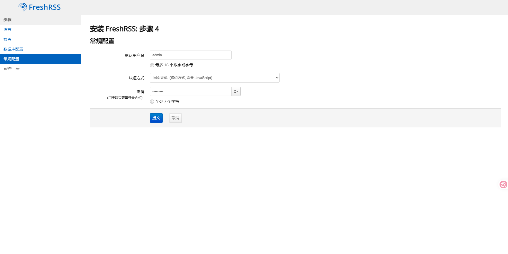
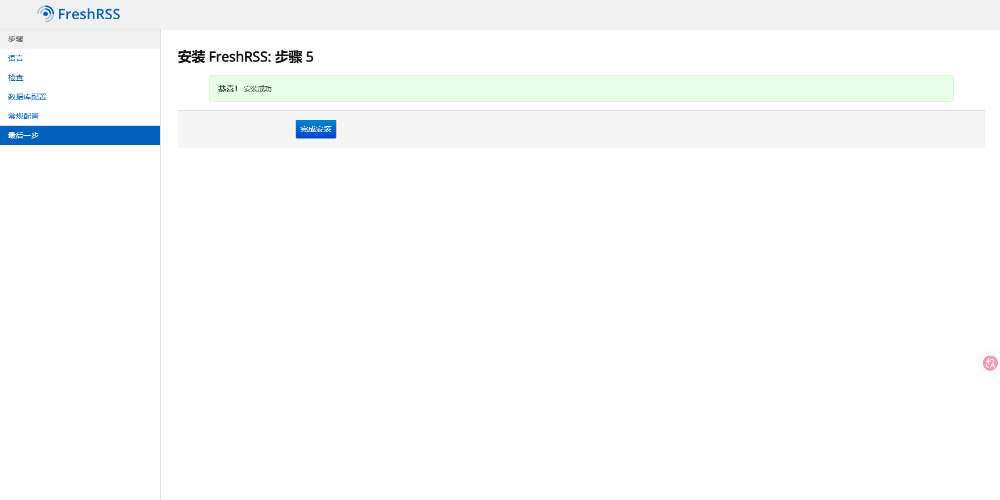
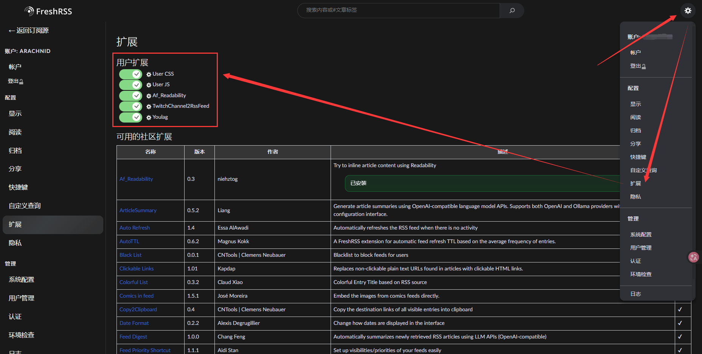

Version：FreshRSS 1.28.1

# 介绍
FreshRSS 是一个自主办的 RSS 和信息聚合服务，它轻量级，易于工作，强大和支持定制的阅读器，更重要的是该项目是开源的。
特点：
- 多信息聚合，可以关注网站、博客、视频频道
- 可以直接获取信息阅读或跳转原文阅读
- 能快速搜索查询
- 通过网络抓取外链提要
- 过滤器选择所需信息
- 可配置实时性订阅更新
- 高效快速订阅及管理文章
- 社区主题及自定义扩展
- 国际多语言支持
官网地址：https://www.freshrss.org/
# 安装
创建 FreshRSS 配置文件存放位置：
mkdir -p /app/freshrss | ||
cd /app/freshrss |
根据官方说明，由于配置参数过多，因此采用 docker compose 的方法，添加 docker-compose.yml 配置文件：
vim docker-compose.yml |
写入：
version: "3.8" | |
services: | |
freshrss-db: | |
image: mariadb:lts | |
container_name: freshrss-mariadb | |
restart: unless-stopped | |
environment: | |
- MYSQL_ROOT_PASSWORD=rootpasswd | |
- MYSQL_DATABASE=freshrss | |
- MYSQL_USER=freshrss | |
- MYSQL_PASSWORD=freshrsspass | |
volumes: | |
- ./db:/var/lib/mysql | |
networks: | |
- freshrss-network | |
freshrss-app: | |
image: freshrss/freshrss:latest | |
container_name: freshrss | |
restart: unless-stopped | |
ports: | |
- "8184:80" | |
logging: | |
options: | |
max-size: 10m | |
volumes: | |
# Recommended volume for FreshRSS persistent data such as configuration and SQLite databases | |
- ./data:/var/www/FreshRSS/data | |
# Optional volume for storing third-party extensions | |
- ./extensions:/var/www/FreshRSS/extensions | |
environment: | |
TZ: Asia/Shanghai | |
# Cron job to refresh feeds at specified minutes | |
CRON_MIN: '*/45' | |
# Optional auto-install parameters (the Web interface install is recommended instead): | |
# ⚠️ Parameters below are only used at the very first run (so far). | |
# So if changes are made (or in .env file), first delete the service and volumes. | |
# ℹ️ All the --db-* parameters can be omitted if using built-in SQLite database. | |
# FRESHRSS_INSTALL: |- | |
# --api-enabled | |
# --base-url ${BASE_URL} | |
# --db-base ${DB_BASE} | |
# --db-host ${DB_HOST} | |
# --db-password ${DB_PASSWORD} | |
# --db-type mysql | |
# --db-user ${DB_USER} | |
# --default-user admin | |
# --language zh_CN | |
# FRESHRSS_USER: |- | |
# --api-password ${ADMIN_API_PASSWORD} | |
# --email ${ADMIN_EMAIL} | |
# --language zh_CN | |
# --password ${ADMIN_PASSWORD} | |
# --user admin | |
healthcheck: | |
test: ["CMD", "cli/health.php"] | |
timeout: 10s | |
start_period: 60s | |
start_interval: 11s | |
interval: 75s | |
retries: 3 | |
networks: | |
- freshrss-network | |
depends_on: | |
- freshrss-db | |
networks: | |
freshrss-network: | |
driver: bridge |
在上面写入的文本中，可以看得到是注释了 FRESHRSS_INSTALL 和 FRESHRSS_USER 的配置信息，从提示信息可以知道官方建议使用 web 界面安装，因此可以不用在部署的时候配置，以避免参数不对所导致部署失败，直接在 web 界面上根据提示配置；若不想 web 配置，需要额外添加 .env 环境变量，并去除配置注释：
vim .env |
写入：
BASE_URL=https://freshrss.example.net # 对外公开的域名，主要用于第三方调用 API | |
ADMIN_EMAIL=admin@example.net # 你的邮箱 | |
ADMIN_PASSWORD=freshrss | |
ADMIN_API_PASSWORD=freshrss | |
# Published port if running locally | |
PUBLISHED_PORT=8184 | |
# Database credentials (not relevant if using default SQLite database) | |
# 以下数据即 freshrss-db 服务的 environment 参数，必须对应，否则无法启动 | |
DB_HOST=freshrss-db # 数据库主机名称 | |
DB_BASE=freshrss # 数据库名称 | |
DB_USER=freshrss # 数据库用户名 | |
DB_PASSWORD=freshrsspass # 数据库密码 |
修改完成后，使用以下命令进行部署：
docker-compose up -d |
# 使用
部署完毕后，浏览器访问 http://localhost:8184 ；如果你是使用 web 初始配置，那么你将得到以下几步的配置处理：
step 1：

step 2：

step 3：

在安装向导中填写数据库信息：
- 数据库类型：
MySQL/MariaDB - 数据库主机（Host）：
freshrss-db - 数据库名称（Database）：
freshrss - 数据库用户（User）：
freshrss - 数据库密码（Password）：
freshrsspass
以上数据库配置信息对应回去你上面 freshrss-db 服务的 environment 设置的参数，表前缀留空即使用默认的 freshrss_ ，若是出错无法连接到数据库，则会出现提示，因此推荐使用 web 配置：

step 4：

配置你的登录用户及登录密码。
step 5：

最后，恭喜你安装成功。
# 插件扩展
进入 extensions 目录：
cd extensions/ |
# Youlag
安装 Youlag YouTube 现代化界面主题：
wget -c https://github.com/civilblur/youlag/releases/download/v4.2.0/youlag-4.2.0.zip | ||
unzip youlag-4.2.0.zip | ||
rm youlag-4.2.0.zip |
# Readable
安装 Readable 尝试获取文章的内容全文： （建议使用 Af_Readability）
git clone https://github.com/printfuck/xExtension-Readable.git |
编写依赖服务：
vim compose.yml |
写入：
services: | |
read: | |
image: phpdockerio/readability-js-server | |
container_name: freshrss-read | |
restart: always | |
merc: | |
image: wangqiru/mercury-parser-api | |
container_name: freshrss-merc | |
restart: always | |
fivefilters: | |
image: "heussd/fivefilters-full-text-rss:latest" | |
container_name: freshrss-fivefilters | |
environment: | |
# Leave empty to disable admin section | |
- FTR_ADMIN_PASSWORD= | |
volumes: | |
- "./rss-cache:/var/www/html/cache/rss" | |
ports: | |
- "5185:80" | |
restart: always |
然后进行部署：
docker-compose -f compose.yml up -d |
# Af_Readability
安装 Af_Readability 尝试获取文章的内容全文：
git clone https://github.com/Niehztog/freshrss-af-readability.git | ||
mv freshrss-af-readability/xExtension-Af_Readability |
note：
如果没有 git ，则安装 apt install git 安装一下。
# TwitchChannel2RssFeed
安装 TwitchChannel2RssFeed ：
git clone https://github.com/babico/xExtension-TwitchChannel2RssFeed.git |
安装完所需的扩展后，重启一下 FreshRSS 服务：
docker restart freshrss |
最后进入 设置 找到 扩展 启用所需插件：

更多扩展可看：https://github.com/FreshRSS/Extensions/tree/main